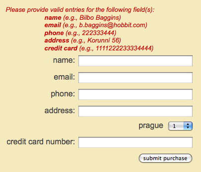

Apache NetBeans (incubating)
Apache NetBeans (incubating)Just released!
NetBeans Eコマース チュートリアル－トランザクションビジネスロジックの統合
チュートリアルの内容

Figure 1. Content on this page applies to NetBeans IDE, versions 6.8 and 6.9
この単元の目的は、Webリクエストからデータを収集し、それをバックエンドのデータベースに書き込む（EJBとJPAの技術によって提供された）オブジェクトリレーショナルマッピング（ ORM）機能の使い方をデモすることです。特に興味深いのは、 container-managed (コンテナ管理) トランザクション（ GlassFish v3のJava EEのコンテナ図を参照）のための EJB サポートです。いくつかの非侵入型の注釈を適用することにより、EJBクラスをトランザクションマネージャに変換することができます、それによってデータベースに含まれているデータの整合性を確保します。言い換えれば、トランザクションマネージャは、一つの作業単位（一つの仕事の固まり）として、データベースへの複数書き込みアクションを処理します。これは、作業単位がそれをまとめて処理するか、または、もし処理中のある時点でエラーが発生したら、それまでのデータベースへの変更をすべて処理前の状態に戻し（ロールバックし）ます。
AffableBean アプリケーションのコンテキスト内で、この単元はチェックアウトフォームからデータが受信された時の customer order (顧客注文)の処理に焦点を当てています。あなたは OrderManager EJB を作成して、セッション cart オブジェクトと共にチェックアウトのフォームデータを処理します。 OrderManager は affablebean データベースへの複数の書き込みアクションの入ったトランザクションを実行します。いずれかのアクションが失敗した場合、トランザクションはロールバックされます。
あなたはこのチュートリアルで構築するアプリケーションのライブデモを見ることができます： NetBeans E コマース チュートリアル デモアプリケーション。
| ソフトウェアまたはリソース | 必須バージョン |
|---|---|
Java バンドル版, 6.8 または 6.9 |
|
バージョン 6 |
|
GlassFish server |
v3または Open Source Edition 3.0.1 |
バージョン 5.1 |
|
スナップショット 7 |
メモ：
-
NetBeans IDE を正常に実行するには Java 開発キット（ JDK）が必要です。上記のリソースが全くない場合、あなたは、JDK を最初にダウンロードしてインストールする必要があります。
-
NetBeans IDE Java バンドル版には、このチュートリアルで構築するアプリケーションで必要とされる Java Web と JAVA EE 技術が入っています。
-
NetBeans IDE Java バンドル版には、また、このチュートリアルに必要な GlassFish サーバーが入っています。あなたは 個別にGlassFishサーバーをダウンロードできますが、NetBeans の提供するバージョンをダウンロードすれば、自動的に IDE に登録される利点があります。
-
あなたは、以前の単元を完了することなく、このチュートリアルで単元を追うことができます。そうするには、セットアップ手順を参照してください、手順には、データベースを準備する方法と、 IDEと GlassFishとMySQL 間の接続を確立する方法について説明してあります。
トランザクションの概要
顧客のショッピングカートに入っているアイテム(商品)、同様にチェックアウトフォームからのデータを処理するために、あなたは、OrderManager EJB を作成します。 OrderManager は 提供されたデータを使用して、データベースに以下の書き込みアクションを実行します：
-
新しい
Customerレコードが追加されます。 -
新しい
CustomerOrderレコードが追加されます。 -
新しい
OrderedProductレコードは、ShoppingCartに入っているアイテム順に追加されます。
我々は、placeOrder メソッドを作成してこれを実装します。このメソッドは３つの書き込みアクションを実行します。プライベートヘルパーメソッド、 addCustomer、 addOrder、および addOrderedItems を順次呼び出すことによって実行されます。また、3つのヘルパーメソッドをクラスに実装します。EJB コンテナ管理のトランザクションサービスを活用するには、２つのアノテーションだけが必要です。これらは：
-
`@TransactionManagement`
(`+`TransactionManagementType+.CONTAINER):クラスで発生する全てのトランザクションがコンテナ管理されることを指示するために使われます。 -
`@TransactionAttribute`
(`+`TransactionAttributeType+.REQUIRED): 作成されるべき新しいトランザクションを指示するためのトランザクションを起動するメソッドで使われます。（まだ存在していない場合）。

Figure 2. Several write actions are performed within a single transaction
我々はより大きなコンテキストの中にトランザクションを実装しているので、我々はそれをいくつかの簡単に消化しやすタスクに分けてこの課題に取り組みます。
プロジェクトスナップショットを調べる
この単元に関連付けられたプロジェクト スナップショットを調べることから始めます。
-
IDEに、この単元用のプロジェクト スナップショットを開きます。プロジェクトを開く( image::images/open-project-btn.png[] ) ボタンををクリックして、ウィザードを使用し、お使いのコンピュータにプロジェクトをダウンロードした場所を指示します。あなたが前の単元から進んでいる場合 、注意して下さい。このプロジェクトのスナップショットは、前の単元の完了後のプロジェクトの状態と同一ですが、以下の例外があります：
-
confirmation.jspページが完全に実装されています。 -
affablebean.cssスタイルシートにconfirmation.jspページを実装するための特有のルールが入っています。
-
-
プロジェクトを実行 ( image::images/run-project-btn.png[] )し、データベースとアプリケーションサーバを適切に構成していることを確認してください。
プロジェクトを実行した時、エラーを受け取った場合は、セットアップ手順を再び見ます。そこに「データベースを準備して、IDE、GlassFish 、MySQL 間の接続を確立する方法」が書かれています。
-
ブラウザでアプリケーションの機能をテストします。具体的には、全ての + ビジネスプロセスフロー+ をステップ実行します。チェックアウトのページから [ submit an order(注文を送信する) ] をクリックすると、現在の確認ページが以下のように表示されます：

Figure 3. Confirmation page displays without any data relating to the processed order
確認ページには、注文に関するデータは何も表示されません。実際、現在の状態で、アプリケーションはチェックアウトのフォームからのデータに何もしていません。この単元の終わりには、アプリケーションは顧客データを収集しそれを使って注文を処理しているでしょう。最終の状態では、アプリケーションは確認ページに処理した注文の要約を表示し、ユーザの ShoppingCart（ショッピングカート） を削除して、ユーザセッションを終了しているでしょう。 (スナップショット8チェックアウトフォームが送信された時、リクエスト－レスポンスサイクルを完了する。)
OrderManager EJB を作成する
-
IDE ツールバーの [ New File(新規ファイル)] ( image::images/new-file-btn.png[] ) ボタンをクリックします。（または Ctrl - n を押す、⌘ - n Mac）。[New File(新規ファイル)] のウィザードで、[ Java EE カテゴリ] を選択し、次に [Session BeanセッションBean] を選択します。
-
[次へ]をクリック。[EJB Name]に [
OrderManager] と入れ、Package(パッケージ) に [session(セッション)] をセット、他のデフォルト設定を受け入れます。 （ステートレスセッションBeanを作成します。ウィザードは Bean のインターフェイスを生成しません。 ）

Figure 4. Create a stateless EJB session bean using the Session Bean wizard
-
[Finish] をクリックします。新しい
OrderManagerクラスが生成され、エディタに開きます。
リクエストパラメータを処理する
-
プロジェクトの
ControllerServletを開きます。（プロジェクトウィンドウで ControllerServlet を選ぶか、またはAlt - Shift - O（Ctrl - Shift - O Mac）を押し [Go to File] ダイアログを使います。） -
`/purchase`リクエストが実装されいる doPost メソッド内のエリアに行きます（１９０行目）。
Ctrl - G を押し、[Go To Line] ダイアログを使用します。

Figure 5. Use the Go to Line dialog to quickly navigate to a specific line
-
送信されたチェックアウトフォームからパラメータを抽出するコードを実装します。「
TODO: Implement purchase action」コメントを探し、それを削除し、以下を追加します：
// if purchase action is called
} else if (userPath.equals("/purchase")) {
*if (cart != null) {
// extract user data from request
String name = request.getParameter("name");
String email = request.getParameter("email");
String phone = request.getParameter("phone");
String address = request.getParameter("address");
String cityRegion = request.getParameter("cityRegion");
String ccNumber = request.getParameter("creditcard");
}*
userPath = "/confirmation";
}placeOrder とヘルパーメソッドの実装
-
ControllerServletで、OrderManagerEJB への参照を追加します。そのクラスの先頭にスクロールし、すでにリストされている session facade EJB（セッションファサード EJB）の下に参照を追加します。
public class ControllerServlet extends HttpServlet {
private String userPath;
private String surcharge;
private ShoppingCart cart;
@EJB
private CategoryFacade categoryFacade;
@EJB
private ProductFacade productFacade;
*@EJB
private OrderManager orderManager;*-
Ctrl - Shift - I （⌘：- Shift Mac）を押し、エディタが
session.OrderManagerにインポート文を追加できるようにします。 -
抽出されたパラメータとセッション
cartオブジェクトも同様に、OrderManager.placeOrderメソッドの引数として使います。次のコードを追加します：
// if purchase action is called
} else if (userPath.equals("/purchase")) {
if (cart != null) {
// extract user data from request
String name = request.getParameter("name");
String email = request.getParameter("email");
String phone = request.getParameter("phone");
String address = request.getParameter("address");
String cityRegion = request.getParameter("cityRegion");
String ccNumber = request.getParameter("creditcard");
*int orderId = orderManager.placeOrder(name, email, phone, address, cityRegion, ccNumber, cart);*
}
userPath = "/confirmation";
}私たちは、まだ placeOrder メソッドを作成していないことに注意してください。エディタがエラーフラグを立てている理由がこれです。あなたは左余白に表示されるチップを使用できます。チップは、あなたが適切なクラスの中にメソッドのシグネチャを生成することができるようにします。

-
[ tip ] をクリックします。 IDE は
placeOrderメソッド をOrderManagerクラスの中に 生成します。
@Stateless
public class OrderManager {
*public int placeOrder(String name, String email, String phone, String address, String cityRegion, String ccNumber, ShoppingCart cart) {
throw new UnsupportedOperationException("Not yet implemented");
}*
...
}cart.ShoppingCart の import 文も同様に自動的にファイルの先頭に挿入されます。
-
新しい
placeOrderメソッドで、メソッドの引数を使用して、 ヘルパーメソッド（まだ存在しない）への呼び出しを行います。次のように入力してください：
public int placeOrder(String name, String email, String phone, String address, String cityRegion, String ccNumber, ShoppingCart cart) {
*Customer customer = addCustomer(name, email, phone, address, cityRegion, ccNumber);
CustomerOrder order = addOrder(customer, cart);
addOrderedItems(order, cart);*
}私たちは、データベースの制約のために特定の順序に従う必要があります。たとえば、 Customer レコードは、CustomerOrder の前に作成される必要があります。というのは、CustomerOrder は Customer`を参照する必要があるからです。同様に `OrderedItem レコードは既にある CustomerOrder への参照を必要とします。
-
Ctrl-Shift-I （⌘-Shift Macの場合）を押して、import を固定します。
entity.Customerとentity.CustomerOrderのインポート文が、自動的にファイルの先頭に追加されます。 -
エディターのヒントを使い、
addCustomer,addOrder, とaddOrderedItems用のメソッドシグニチャをIDEに生成させます。３つのヒントを利用した後の、OrderManagerクラスは以下のようになります。
@Stateless
public class OrderManager {
public int placeOrder(String name, String email, String phone, String address, String cityRegion, String ccNumber, ShoppingCart cart) {
Customer customer = addCustomer(name, email, phone, address, cityRegion, ccNumber);
CustomerOrder order = addOrder(customer, cart);
addOrderedItems(order, cart);
}
*private Customer addCustomer(String name, String email, String phone, String address, String cityRegion, String ccNumber) {
throw new UnsupportedOperationException("Not yet implemented");
}
private CustomerOrder addOrder(Customer customer, ShoppingCart cart) {
throw new UnsupportedOperationException("Not yet implemented");
}
private void addOrderedItems(CustomerOrder order, ShoppingCart cart) {
throw new UnsupportedOperationException("Not yet implemented");
}*
}ここで留意すべきは、まだエディタにエラーフラグが立っていることです。そのメソッドに現在 return 文がないという事実によります。placeOrder シグニチャは、「そのメソッドは int を返す」ように指示しています。あとでデモしますが、それが成功裏に処理されると、そのメソッドは order ID を返します。それ以外の場合は、 0 が返されます。
-
次の return 文を入力します。
public int placeOrder(String name, String email, String phone, String address, String cityRegion, String ccNumber, ShoppingCart cart) {
Customer customer = addCustomer(name, email, phone, address, cityRegion, ccNumber);
CustomerOrder order = addOrder(customer, cart);
addOrderedItems(order, cart);
*return order.getId();*
}この段階で、OrderManager クラスのエラー はすべて解決されます。
-
3つのヘルパーメソッドの実装から始めます。今のところ、各メソッドの入力パラメータに新しいエンティティオブジェクトを生成させるコードを単に追加するだけです。
addCustomer
新しい Customer オブジェクトを作成しそのオブジェクトを返します。
private Customer addCustomer(String name, String email, String phone, String address, String cityRegion, String ccNumber) {
*Customer customer = new Customer();
customer.setName(name);
customer.setEmail(email);
customer.setPhone(phone);
customer.setAddress(address);
customer.setCityRegion(cityRegion);
customer.setCcNumber(ccNumber);
return customer;*
}addOrder
新しい CustomerOrder オブジェクトを作成しそのオブジェクトを返します。 java.util.Random クラスを使いランダムな confirmation（確認）番号を生成します。
private CustomerOrder addOrder(Customer customer, ShoppingCart cart) {
*// set up customer order
CustomerOrder order = new CustomerOrder();
order.setCustomer(customer);
order.setAmount(BigDecimal.valueOf(cart.getTotal()));
// create confirmation number
Random random = new Random();
int i = random.nextInt(999999999);
order.setConfirmationNumber(i);
return order;*
}addOrderedItems
ShoppingCart を反復処理して、OrderedProduct を作成します。 OrderedProduct を生成するために、あなたは OrderedProductPK エンティティクラス使用することができます。インスタンス化した OrderedProductPK は、OrderedProduct コンストラクタに渡すことができます は、デモを以下に示します。
private void addOrderedItems(CustomerOrder order, ShoppingCart cart) {
*List<ShoppingCartItem> items = cart.getItems();
// iterate through shopping cart and create OrderedProducts
for (ShoppingCartItem scItem : items) {
int productId = scItem.getProduct().getId();
// set up primary key object
OrderedProductPK orderedProductPK = new OrderedProductPK();
orderedProductPK.setCustomerOrderId(order.getId());
orderedProductPK.setProductId(productId);
// create ordered item using PK object
OrderedProduct orderedItem = new OrderedProduct(orderedProductPK);
// set quantity
orderedItem.setQuantity(scItem.getQuantity());
}*
}-
Ctrl-Shift-I（⌘-Shift Macの場合）を押して、importを固定します。ダイアログが開き、インポートされるすべてのクラスを表示します。ダイアログに`java.util.List` が正しく示されていることに注意してください。

Figure 6. Press Ctrl-Shift-I to fix imports in a file
-
[ OK ]をクリックします。必要なすべてのインポート文が追加され、そのクラスのコンパイラエラーがなくなります。
JPA EntityManager を利用する
「エンティティクラスとセッションBeanを追加する」で説明したように 、 EntityManager API は JPA に含まれており、データベースの永続性操作を実行する責任を持っています。AffableBean プロジェクトで、すべての EJB は EntityManager を採用しています。デモのために、エディタで任意のセッションファサード Bean を開きます。注意してください。そのクラスは @PersistenceContext 注釈を使用して、コンテナ管理 EntityManager への依存関係と、それに関連した永続コンテキスト ( persistence.xml ファイルに指定されているように`AffableBeanPU` ）を表現します。たとえば、 ProductFacade Bean は次のようになります：
@Stateless
public class ProductFacade extends AbstractFacade<Product> {
*@PersistenceContext(unitName = "AffableBeanPU")
private EntityManager em;*
protected EntityManager getEntityManager() {
return em;
}
...
// manually created
public List<Product> findForCategory(Category category) {
return em.createQuery("SELECT p FROM Product p WHERE p.category = :category").
setParameter("category", category).getResultList();
}
}データベースへ書き込みできるようにするために、OrderManager EJB は同様の手段を取る必要があります。EntityManager インスタンスで、そこで我々はヘルパーメソッド（addCustomer、addOrder、 addOrderedItems）を変更することができます。そして、ヘルパーメソッドが作成したエンティティオブジェクトがデータベースに書き込まれます。
-
OrderManagerで、@PersistenceContext注釈を適用して、コンテナ管理EntityManagerとAffableBeanPU永続コンテキストとの依存関係を表現します。また、EntityManagerインスタンスを宣言します。
@Stateless
public class OrderManager {
*@PersistenceContext(unitName = "AffableBeanPU")
private EntityManager em;*
...
}-
Ctrl-Shift-I（⌘:-Shift-I Macの場合）を押して、import を固定します。
javax.persistence.EntityManagerとjavax.persistence.PersistenceContext用のインポート文がそのクラスの先頭に追加されます。 -
EntityManagerを使用して、 データベースに書き込まれるエンティティオブジェクトをマークします。これは、EntityManagerAPI のpersistメソッドを使用して達成されます。ヘルパーメソッドに次の変更をします。
addCustomer
private Customer addCustomer(String name, String email, String phone, String address, String cityRegion, String ccNumber) {
Customer customer = new Customer();
customer.setName(name);
customer.setEmail(email);
customer.setPhone(phone);
customer.setAddress(address);
customer.setCityRegion(cityRegion);
customer.setCcNumber(ccNumber);
*em.persist(customer);*
return customer;
}addOrder
private CustomerOrder addOrder(Customer customer, ShoppingCart cart) {
// set up customer order
CustomerOrder order = new CustomerOrder();
order.setCustomer(customer);
order.setAmount(BigDecimal.valueOf(cart.getTotal()));
// create confirmation number
Random random = new Random();
int i = random.nextInt(999999999);
order.setConfirmationNumber(i);
*em.persist(order);*
return order;
}addOrderedItems
private void addOrderedItems(CustomerOrder order, ShoppingCart cart) {
List<ShoppingCartItem> items = cart.getItems();
// iterate through shopping cart and create OrderedProducts
for (ShoppingCartItem scItem : items) {
int productId = scItem.getProduct().getId();
// set up primary key object
OrderedProductPK orderedProductPK = new OrderedProductPK();
orderedProductPK.setCustomerOrderId(order.getId());
orderedProductPK.setProductId(productId);
// create ordered item using PK object
OrderedProduct orderedItem = new OrderedProduct(orderedProductPK);
// set quantity
orderedItem.setQuantity(String.valueOf(scItem.getQuantity()));
*em.persist(orderedItem);*
}
}EntityManager の persist`メソッドは、すぐにターゲットオブジェクトをデータベースへ書き込みしません。これをより正確に説明するために、 `persist メソッドはオブジェクトを persistence context に配置します。つまり、 EntityManager は、そのエンティティオブジェクトがデータベースと同期されることを保障する責任を取ります。永続コンテキストを EntityManager で使われる中間物と考えて、オブジェクト 領域とリレーショナル領域の間でエンティティを渡します。（だから、オブジェクトリレーショナルマッピング’といいます）
永続コンテキストのスコープ(範囲)は何ですか？ あなたが、IDE Javadoc 索引検索（ Shift-F1、Shift-fn Macで）を開いて、`@PersistenceContext` 注釈の Javadoc ドキュメントを調べる場合、次のことに注意してください。タイプ要素は、「トランザクション永続化コンテキストか、または拡張された永続化コンテキストのどちらが使われるうべきかを指示する）」)ために使われます。transaction-scoped の永続コンテキストが、または拡張永続コンテキストが使用されます。transaction-scoped 永続コンテキストはトランザクションの開始時に作成され、トランザクション エンドで終了します。 そして、extended (拡張) 永続コンテキストは、ステートフルセッション Bean だけに適用されます、そして複数のトランザクションの橋渡しをします。 Javadoc ドキュメントはまた、私たちに「 javax.persistence.PersistenceContextType.TRANSACTION は type 要素のデフォルト値である。」と教えています。したがって、我々は、EntityManager がトランザクションスコープ永続コンテキストにオブジェクトを置くよう指示しませんでしたが、実際に、これがコンテナ管理 EntityManager が デフォルトでふるまう方法なのです。
永続性コンテキストをデータベースに同期させる
この段階では、そのトランザクションまたはトランザクションがないと思うかもしれませんが、 OrderManager は正常にエンティティオブジェクトをデータベースに書くことができます。プロジェクトを実行し、どのようにcustomer orders(顧客の注文)が、現在、処理されるか見てください。
-
F6 キーを押し（ fn-F6 Macの場合）、プロジェクトを実行します。
-
ビジネスプロセスフローをステップ実行します。チェックアウトのページに到着する時に書き込み動作が実行されるてもSQLエラーを起こさないとあなたが知っているデータを確実に入力してください。（検証は後の単元で説明します。 ）たとえば、チェックアウトのフォームに次のように入力してください：
-
name:
Hugo Reyes -
email: ` hurley @ mrcluck.com `
-
phone:
606252924 -
address:
Karlova 33 -
prague:
1 -
credit card number:
1111222233334444
-
以後の手順では、IDE の出力ウィンドウのサーバーログを調べます。チェックアウトフォームを送信する前に、出力ウィンドウを開いてサーバーのログをクリアします。あなたはサーバーログを右クリックして[ Clear クリア] (Ctrl-L; ⌘-L Mac)を選択することでできます。
-
['submit purchase' (購入送信)] ボタンををクリックします。サーバーは HTTP ステータス500 メッセージを返します。

Figure 7. Server responds with an HTTP status 500 message
-
DEにスイッチして、サーバーログを調べます。サーバーログは、[ GlassFish サーバー]タブの下の[Output(出力)ウィンドウ]（Ctrl-4 、⌘-4 Macの場合）にあります。あなたは次のテキストを見つけます。
WARNING: A system exception occurred during an invocation on EJB OrderManager method
public int session.OrderManager.placeOrder(java.lang.String,java.lang.String,java.lang.String,java.lang.String,java.lang.String,java.lang.String,cart.ShoppingCart)
javax.ejb.EJBException
...
Caused by: java.lang.NullPointerException
[.underline]#at session.OrderManager.addOrderedItems(OrderManager.java:75)#
[.underline]#at session.OrderManager.placeOrder(OrderManager.java:33)#出力ウィンドウを最大化するには、Shift + Esc キーを押します。
サーバーログに表示された下線は、エラーが発生したソースファイルの該当行への直接リンクです。
-
session.OrderManager.addOrderedItemsリンクをクリックします。エディタは例外を引き起こしている行を表示します。

Figure 8. Click links in server output window to navigate directly to offending lines in source files
なぜ、order.getId メソッドが`null`を返したかを理解するために、どのようなコードが実際に実行されようとしているか考えてみましょう。 getId メソッドは、生成されたプロセスに現在存在する order の ID 取得を試みます。IDは自動でインクリメントされる主キーなので、データベースは、レコードが追加された時のみ自動的に値を生成します。これを行うもう一つの方法は、手動で永続コンテキストとデータベースとを同期させることです。これは EntityManager の `flush` メソッドを使用して行うことができます。
-
addOrderedItemsメソッドで、flush を呼び出して、データベースに永続化コンテキストを追加します。
private void addOrderedItems(CustomerOrder order, ShoppingCart cart) {
*em.flush();*
List<ShoppingCartItem> items = cart.getItems();
// iterate through shopping cart and create OrderedProducts
for (ShoppingCartItem scItem : items) {
int productId = scItem.getProduct().getId();
// set up primary key object
OrderedProductPK orderedProductPK = new OrderedProductPK();
orderedProductPK.setCustomerOrderId(order.getId());
orderedProductPK.setProductId(productId);
// create ordered item using PK object
OrderedProduct orderedItem = new OrderedProduct(orderedProductPK);
// set quantity
orderedItem.setQuantity(String.valueOf(scItem.getQuantity()));
em.persist(orderedItem);
}
}-
プロジェクトに戻り、ビジネスプロセスの流れをステップ実行します。今回は、チェックアウトフォームを送信したとき、確認ページが表示されます。
-
データベースに記録されている詳細を確認するために、IDE の [サービス] ウィンドウを開きます。（Ctrl-5; ⌘-5 Macの場合) 。[
affablebean] 接続ノードに行きます。もしノードが壊れて ( image::images/connection-broken.png[] )表示される場合、ノードを右クリックし、[ Connect (接続)] を選択します。 -
connection を展開します。そして
affablebeanデータベースのcustomerテーブルに行きます。テーブルを右クリックし、[ View Data(データを表示)] を選択します。customer(顧客) テーブルがエディターにグラフィック表示されます。チェックアウトフォームに追加された customer(顧客)の詳細がテーブル内のレコードとして表示されます。

Figure 9. View Data menu option performs a 'select *' query on the selected table
このように、あなたも customer_order と ordered_product テーブルを調べることができ、データが記録されているかどうかを判断できます。
トランザクションプログラムをセットアップする
トランザクションの主な機能はすべての操作が正常に実行されることを保障することです。もしそうでなければ、個々の操作のいずれも実行されなかったことにします。[1]。以下の手順で、どのように placeOrder メソッドでなされる書き込み操作が単一のトランザクションとして扱われるかをデモします。
-
上記の transaction diagram (トランザクションの図)を参照します。二つのトランザクションに関係したアノテーションを
OrderManagerEJB に追加します。
@Stateless
*@TransactionManagement(TransactionManagementType.CONTAINER)*
public class OrderManager {
@PersistenceContext(unitName = "AffableBeanPU")
private EntityManager em;
*@TransactionAttribute(TransactionAttributeType.REQUIRED)*
public int placeOrder(String name, String email, String phone, String address, String cityRegion, String ccNumber, ShoppingCart cart) {
try {
...@TransactionManagement アノテーション（注釈）は、OrderManager EJB で発生するすべてのトランザクションはコンテナ管理されるよう指示するために使います。 placeOrder メソッド上に配置 された @TransactionAttribute 注釈は、メソッドで発生するすべての操作はトランザクションの一部として扱われなければならないと指示します。
EJB 仕様によると、 コンテナ管理トランザクションは、セッションBeanではデフォルトで有効になっています。さらに、あなたは上記の二つのアノテーションの Javadoc を調べると、CONTAINER はデフォルトの TransactionManagementType であり、および REQUIRED はデフォルトの TransactionAttributeType であるとあなたは正しく指摘するかもしれません。言い換えれば、2つのアノテーションのどちらもあなたのコードを正常に実行するためには必要ではありません。しかしながら、しばしば明示的にソースにデフォルト設定を入れることは読みやすさを向上させるために有用です。
-
現在、
placeOrderメソッドは処理した order の ID を返します。トランザクションが失敗し、注文が処理できない場合、メソッドは ‘0’ を返します。try-catch句を使用します。
@TransactionAttribute(TransactionAttributeType.REQUIRED)
public int placeOrder(String name, String email, String phone, String address, String cityRegion, String ccNumber, ShoppingCart cart) {
*try {*
Customer customer = addCustomer(name, email, phone, address, cityRegion, ccNumber);
CustomerOrder order = addOrder(customer, cart);
addOrderedItems(order, cart);
return order.getId();
*} catch (Exception e) {
return 0;
}*NetBeans はコードテンプレートをサポートします
エディタで仕事をする場合は、コードテンプレート用の IDE サポートを活用してください。達人になるためにコードテンプレートを使用して、最後にはより効率的かつ確実に仕事をすることができるようになります。
たとえば、上記の手順で、trycatch テンプレートを適用することができます 。 ‘trycatch’ と入力して Tab キーを押します。テンプレートがあなたのファイルに追加されます。
@TransactionAttribute(TransactionAttributeType.REQUIRED)
public int placeOrder(String name, String email, String phone, String address, String cityRegion, String ccNumber, ShoppingCart cart) {
*try {
} catch (Exception e) {
}*
Customer customer = addCustomer(name, email, phone, address, cityRegion, ccNumber);
CustomerOrder order = addOrder(customer, cart);
addOrderedItems(order, cart);
return order.getId();その後、あなたは、4つの既存行を try 節の中に移動することができます。そうするには、行を強調表示して、Alt-Shift （ Ctrl-Shift Macの場合）キーを押しながら上矢印キーを押して移動します。終了するときは、Alt - Shift キーを（Ctrl - Shift Macの場合）を押しながらＦ を押し、コードをフォーマットします。
@TransactionAttribute(TransactionAttributeType.REQUIRED)
public int placeOrder(String name, String email, String phone, String address, String cityRegion, String ccNumber, ShoppingCart cart) {
try {
*Customer customer = addCustomer(name, email, phone, address, cityRegion, ccNumber);
CustomerOrder order = addOrder(customer, cart);
addOrderedItems(order, cart);
return order.getId();*
} catch (Exception e) {
}また、既存のコードテンプレートを表示し編集し、新しいテンプレートをＩＤＥに追加することもできます。 [ツール] > [オプション] （Macでは、 [NetBeans] > [Preference設定]）オプションを選び、オプションウィンドウを開きます。[Editor エディタ] > ［Code Templates (コードテンプレート)］を選択します。

Figure 10. View default code templates and define new templates in the Options window
もっと多くのテンプレートを見たいならば、キーボードショートカットカードを参照してください。キーボードショートカットカードは一般的に使用されるコードテンプレートのリストとキーボードショートカットを提供します。メインメニューから、[ Help (ヘルプ)] > [ Keyboard Shortcuts Card (キーボードショートカットカード)] を選択します。
-
次のコードを追加します。説明は後に示します。
@PersistenceContext(unitName = "AffableBeanPU")
private EntityManager em;
*@Resource
private SessionContext context;*
@TransactionAttribute(TransactionAttributeType.REQUIRED)
public int placeOrder(String name, String email, String phone, String address, String cityRegion, String ccNumber, ShoppingCart cart) {
try {
Customer customer = addCustomer(name, email, phone, address, cityRegion, ccNumber);
CustomerOrder order = addOrder(customer, cart);
addOrderedItems(order, cart);
return order.getId();
} catch (Exception e) {
*context.setRollbackOnly();*
return 0;
}
}残念ながら、 try 句の中に3つのメソッドを配置すると、 実行時にそれらのうちの1つが失敗した場合、エンジンはすぐに catch 句にジャンプすることを意味します。このように、通常次に続くいくつかのロールバック操作をスキップします。
あなたは、以前に追加した em.flush() 行をコメントアウトしてこれをテストすることができます 。この方法では、あなたは知っていると思いますが、最初の2つのメソッド (addCustomer と addOrder) が正常に処理され、３番目のメソッド（addOrderedItems）は失敗します。プロジェクトを実行し、ブラウザでチェックアウトフォームを送信します。トランザクションがロールバックしないしないため、顧客と注文のレコードがデータベースに書かれますが、注文したアイテムは書かれません。これはデータベースが破損している状況につながります。
この問題を解決するために、あなたは catch 句の中にロールバック用のトランザクションを明示的に設定します 。上記の @Resource 注釈は、EJBの現在の SessionContext のインスタンスをつかむために適用されます。setRollbackOnly メソッドを使用して、トランザクションがロールバックするようにマークします。
-
プロジェクトを実行し、ビジネスプロセスフローをステップ実行します。order(注文)を送信したときに、IDE に戻りサーバーのログを調べます。出力が次のように表示されています：

Shift - Esc キーを押し、[出力]ウィンドウを最大化します。
上の画像に示すように、緑色のテキストは EclipseLink からの出力を示しています。 エンティティクラスとセッション Bean を追加する方法を思い出して、あなたは EclipseLink のログレベルを 永続ユニットで FINEST に設定します。この出力を調べることができるようになるには、永続化プロバイダがデータベースとやり取りする方法を理解することがキーになります。そうすれば、あなたのプロジェクトをデバッグする必要がある時に大きな助けになります。
これで AffableBean プロジェクトにトランザクションを正常に統合できました。 スナップショット8をダウンロードして、チェックアウトフォームが送信される時リクエストとレスポンスのサイクルを行うコードを調べることができます。スナップショットは OrderManager に getOrderDetails メソッドを実装しています。これは、セットされた order にかかわるすべての詳細を収集します。トランザクションが成功した場合、 ControllerServlet は、order の詳細をリクエストスコープの中に置き、ユーザーの cart オブジェクトを破壊して、セッションを終了し、リクエストを確認ビューに転送します。トランザクションが失敗した場合、 ControllerServlet は、エラーフラグを立て、レスポンスをチェックアウトViewに転送し、ユーザーが再送信できるようにします。

Figure 11. Upon transaction failure, the checkout page redisplays with error message
ユーザー入力を検証する
スナップショット8 には、チェックアウト フォームのクライアントとサーバー側の検証が実装されています。フォームの検証とは、フォームが処理される前にフォームが正しく記入されているかチェックする処理です。これは、無効な入力フィールドに意味のあるフィードバックを返すことによってユーザを支援するだけでなく、それはまた、処理やストレージに悪影響を与えるコンテンツを送信しようとする悪意のある試みを阻止するのに役立ちます。
フォームを検証するための2つの主要メソッドは：サーバー側（この例では、 Javaを使用） とクライアント側の（ JavaScriptを使用）二つです。どちらの方法も通常必要不可欠で、快適なユーザーエクスペリエンスを提供するだけでなく、アプリケーションの堅牢なセキュリティを提供します。クライアント側の検証は、ブラウザとサーバー間の往復を起動する必要なく、ユーザに即座にフィードバックするのに役立ちます。そのため、ネットワークトラフィックトラフィックを抑制し、サーバーの負荷を減少させます。クライアント側検証の近代的なフォームは、しばしばユーザに即座にフィールド固有のフィードバックを返すために実装されます。クライアント側の JavaScript はブラウザ上で実行され、ブラウザは一般的に JavaScript を無効にすることができます。この理由だけで、アプリケーションは、極悪非道な入力に対する保護の唯一の手段としてクライアント側の検証だけに依存することはできません。フォームデータがサーバーに到着するその時に、サーバー側の検証を実行する必要があります。データは、リクエストから抽出され、処理/または保存される前にチェックされます。検証エラーが検出された場合、サーバーはユーザーに適切なメッセージを持つフォームを返すことによってレスポンス(応答)します。
クライアント側の検証
AffableBean アプリケーション用に 、クライアント側の検証は人気のある jQuery プラグインを利用して提供されています。 jQuery はクロスブラウザの JavaScript ライブラリであり、クライアント側の HTML スクリプトを簡素化するように設計されています。

Figure 12. Field validation messages appear upon clicking 'submit purchase'
スナップショット8 には js フォルダがあり、そこには、 jQuery コアライブラリ (jquery-1.4.2.js) 、同様に検証プラグイン用スクリプト (jquery.validate.js) が含まれています。コアライブラリーはアプリケーションの header.jspf ファイルの中で参照されています。同時に検証プラグイン スクリプトは checkout.jsp ファイルの中で直接参照されています。それゆえ、検証用プラグインは、checkout.jspファイルだけに必要とされます。checkout.jsp の中で、プラグインは、利用可能なドキュメントに従ったチェックアウトフォームに合うようにカスタマイズされます 。
<script type="text/javascript">
$(document).ready(function(){
$("#checkoutForm").validate({
rules: {
name: "required",
email: {
required: true,
email: true
},
phone: {
required: true,
number: true,
minlength: 9
},
address: {
required: true
},
creditcard: {
required: true,
creditcard: true
}
}
});
});
</script>IDE は jQuery をサポートします。Ctrl-Space キーを押すと、エディタでコード補完やドキュメントを呼び出すことができるようになります。

Figure 13. Press Ctrl-Space on JavaScript code to invoke jQuery documentation
JavaScript でコードするとき、アプリケーションで使おうとしているブラウザを IDE に指定することができます。オプションウィンドウを開き（ [ツール] > [オプション]。Mac では [NetBeans] > [Preferences 設定]）、 [Miscellaneous(その他)] を選択し、 [ JavaScript ] タブを選択します。

Figure 14. Specify targetted browsers for your application in the Options window
ドキュメントを呼び出している関数が、あなたが使おうとしているブラウザで全くサポートされていない場合、そのドキュメントは警告フラグをポップアップします。下の画像例で、Internet Explorerバージョン5.5はアプリケーションで使用できるブラウザに含まれていますが、警告フラグが出ています。

Figure 15. Documentation popup warns of method calls to non-compatible browser versions
サーバー側の検証
AffableBean プロジェクトのサーバー側の検証は、Validator クラスにより実装されています。 ControllerServlet は Validator オブジェクトを作成し、ユーザデータに対しその validateForm メソッドを呼び出します。：
// validate user data
boolean validationErrorFlag = false;
validationErrorFlag = validator.validateForm(name, email, phone, address, cityRegion, ccNumber, request);
// if validation error found, return user to checkout
if (validationErrorFlag == true) {
request.setAttribute("validationErrorFlag", validationErrorFlag);
userPath = "/checkout";
// otherwise, save order to database
} else {
...
}検証エラーが見つかった場合（つまり、validateForm が`true` を返す場合）、フラグはリクエストスコープ属性の形式で発生します。サーバーはクライアントにチェックアウトのページを送り返します。checkout.jsp でフラグが検出されると、新しいテーブル行が作成されエラーメッセージをそのテーブルのトップに表示します。
<form id="checkoutForm" action="<c:url value='purchase'/>" method="post">
<table id="checkoutTable" class="rounded">
<c:if test="${!empty validationErrorFlag}">
<tr>
<td colspan="2" style="text-align:left">
<span class="error smallText">Please provide valid entries for the following field(s):
<c:if test="${!empty nameError}">
<br><span class="indent"><strong>name</strong> (e.g., Bilbo Baggins)</span>
</c:if>
<c:if test="${!empty emailError}">
<br><span class="indent"><strong>email</strong> (e.g.,
b.baggins
@
hobbit.com
)</span>
</c:if>
<c:if test="${!empty phoneError}">
<br><span class="indent"><strong>phone</strong> (e.g., 222333444)</span>
</c:if>
<c:if test="${!empty addressError}">
<br><span class="indent"><strong>address</strong> (e.g., Korunní 56)</span>
</c:if>
<c:if test="${!empty cityRegionError}">
<br><span class="indent"><strong>city region</strong> (e.g., 2)</span>
</c:if>
<c:if test="${!empty ccNumberError}">
<br><span class="indent"><strong>credit card</strong> (e.g., 1111222233334444)</span>
</c:if>
</span>
</td>
</tr>
</c:if>
...
</table>
</form>あなたは一時的にお使いのブラウザで JavaScript を無効にして、サーバー側の検証をテストできます。

Figure 16. Temporarily disable JavaScript in your browser to test server-side validation
提供されているサーバー側の検証の実装は、単に、プロジェクトでサーバー側の検証をセットアップする方法を説明するのに役立つだけです。`Validator`クラスに含まれている実際の検証ロジック は、ほとんど基本的なチェック以外には何も実行しません。決して運用環境では使用しないでください！
link:/about/contact_form.html?to=3&subject=Feedback: NetBeans E-commerce Tutorial - Integrating Transactional Business Logic[ご意見をお寄せ下さい]
関連参照
外部リソース
-
JSR 318: EJB 3.1 最終リリース [仕様のダウンロード]
-
EJB 3 in Action [書籍]
-
データベース トランザクション [Wikipedia]
-
Enterprise JavaBean [Wikipedia]
-
ACID [Wikipedia]
-
jQuery [Wikipedia]